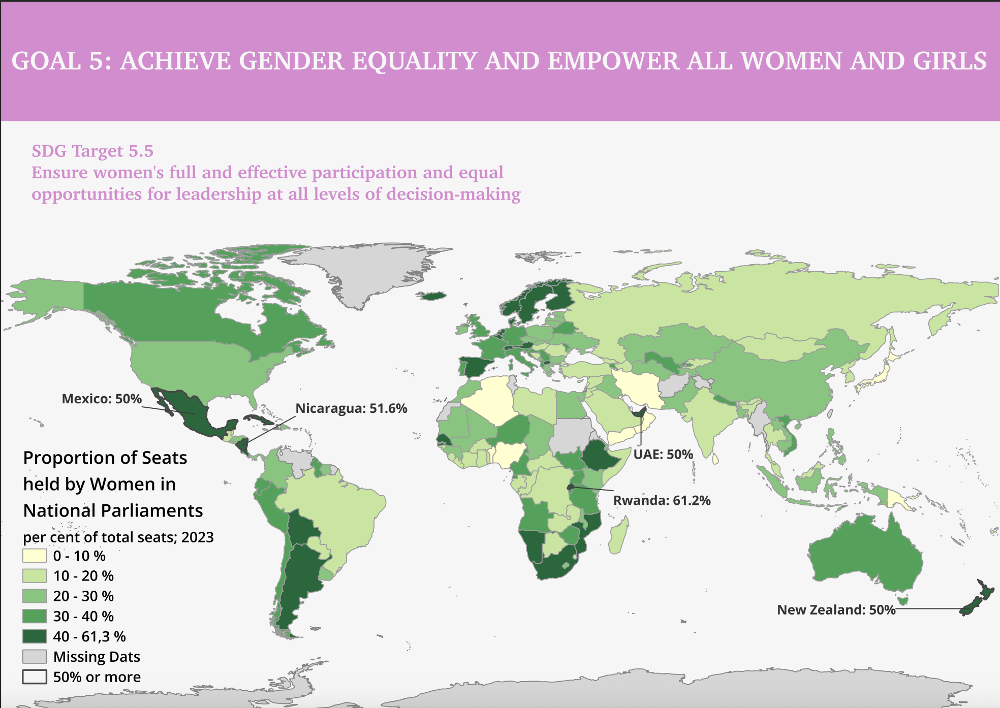

Write a short professional summary of the project here. Explain the purpose of the project, the research question, or the sustainability challenge addressed.
This project involved creating a choropleth map visualising the percentage of women represented in national parliaments across countries worldwide. The aim was to communicate patterns of gender representation in political institutions through an accessible and engaging geographic visualisation. By displaying parliamentary representation data on a map, users can quickly identify regional trends, compare countries, and explore global disparities in political gender equality. The project was completed using QGIS, where spatial and statistical data were combined to create a professional cartographic product. To increase accessibility and user engagement, an interactive version of the map was subsequently published on my personal website, allowing visitors to explore the data dynamically rather than viewing only a static map.
T The project began with collecting data on the percentage of women serving in national parliaments by country, which was from the UN Sustainable Development Goals dataset. This dataset was cleaned and formatted to ensure consistency with the country boundaries contained in the geographic shapefile used for mapping. Within QGIS, the parliamentary representation data was joined to a world countries shapefile using country names and identifiers. After verifying the accuracy of the data join, a choropleth mapping technique was applied, where countries were shaded according to the proportion of women in parliament. Appropriate classification methods and colour gradients were selected to clearly distinguish different levels of representation while maintaining visual clarity and accessibility. The map layout was then designed to include essential cartographic elements such as a title, legend, and data source references, with the most important data highlighted. Once the static map was finalised, it was exported and converted into an interactive web map. The interactive version allows users to hover over or select countries to view specific data values, making the information more engaging and easier to interpret.
Explain the major findings of the project. Discuss spatial patterns, environmental implications, or planning recommendations.

This project strengthened my skills in GIS, data visualisation, and web-based cartography. Creating the choropleth map improved my understanding of cartographic design principles, particularly in selecting classification methods and colour schemes that effectively communicate patterns without misleading the viewer. Publishing the map online introduced additional considerations related to user experience, interactivity, and accessibility. Overall, the project successfully demonstrated how GIS can be used to transform statistical data into meaningful visual insights. The addition of an interactive web version enhanced the project's impact by allowing users to engage directly with the data, making the map a more effective tool for exploration and communication. The experience provided valuable practical skills in both desktop GIS analysis and web-based geographic visualisation, which are highly relevant for future work in GIS, spatial analysis, and data communication.